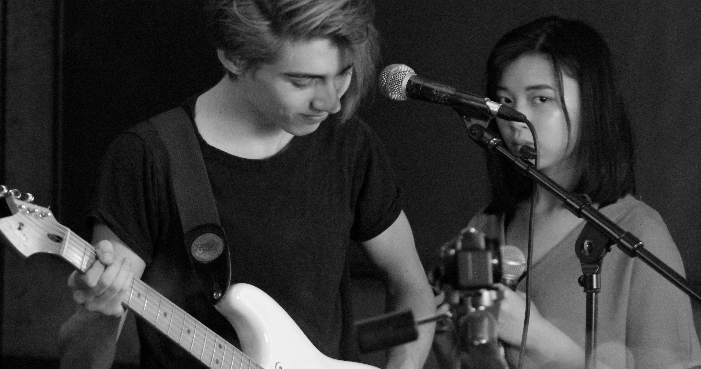
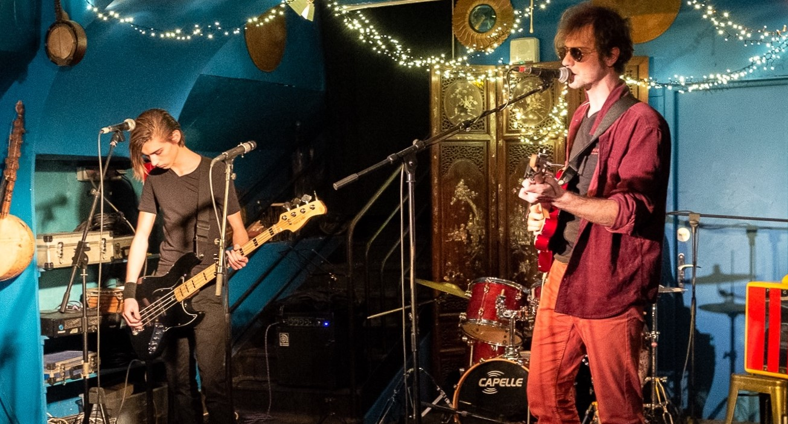
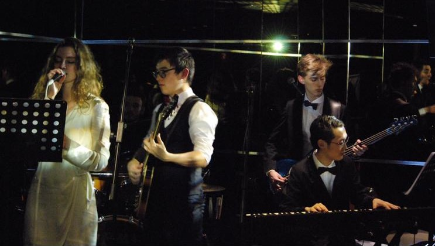
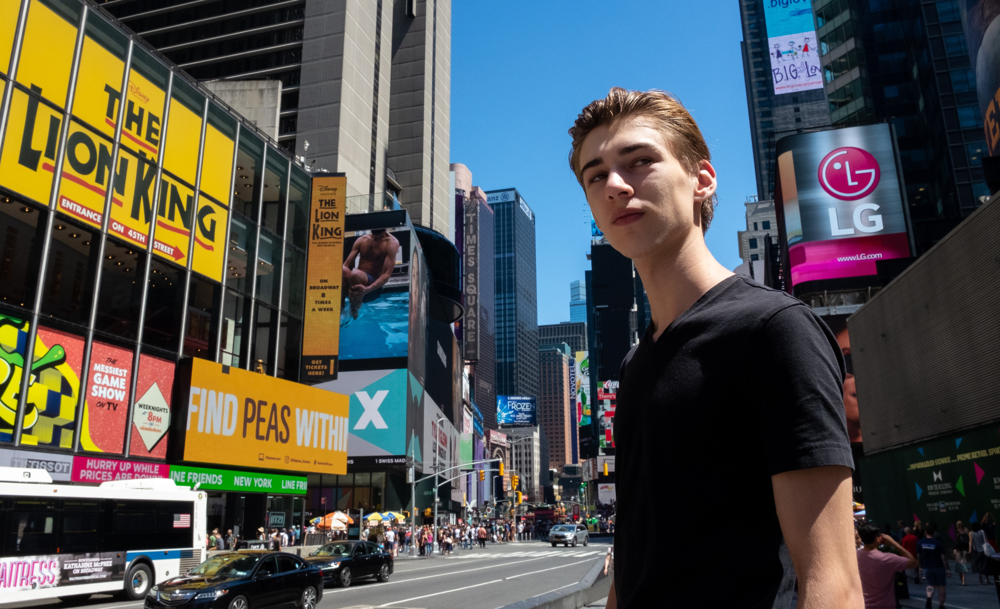
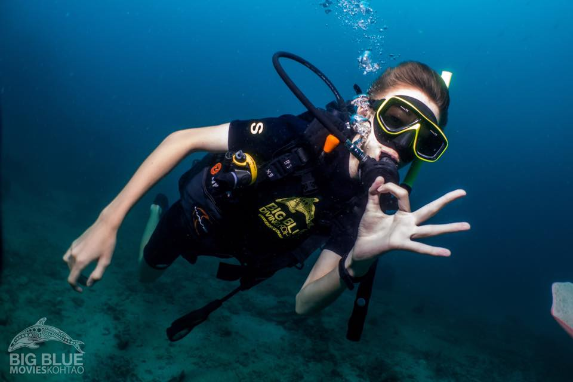
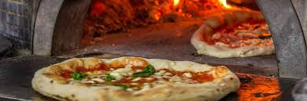
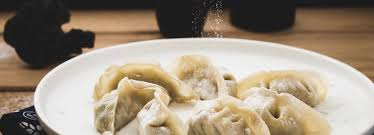
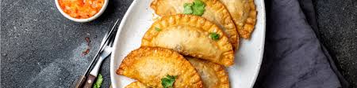

Etudiant à l'Essec, je suis passionné de musique et de voyages. Je joue de plusieurs instruments et je fais partie de l'association musicale de l'école. Je suis de nationalité Anglaise et j'adore faire de la musique, voyager, et la nourriture.
Avant de découvrir mon profil et mon parcours, je te laisse aller voir la page du restaurant de ma tante :
Go to Populus BistrotEn 2016, premier concert avec ma partenaire de chant Iris. Nous répétions dans des sous sols parisiens à Bastille.
A eu lieu sur le bateau El Alamein, à Paris. Beaucoup de stresse et de bons moments passés avec le groupe Zapatriotes.
Avec l'associtation Jam de l'Essec, au sommet de la Tour Montparnasse. Une expérience inoubliable.
Avec mon père, je suis parti à travers le monde. Muni d'un sac à dos et de 50$ en poche, nous avons passé des super vacances :
Nous sommes partis un mois et avons traversé ce pays en train et en voiture. Ce fut long mais les paysages restent inoubliables.
Nous sommes partis dans les mêmes conditions et avons voyagé uniquement en bus. Voici une photo de mon arrêt à Koh Tao :
Après être parti dans de nombreux pays, j'ai enfin compris la définition du Tourisme Culinaire.
Grand fan de cette culture, voici mon plat préféré :
Après avoir passé ma scolarité à Paris XIII et voyagé dans une multitude de pays Asiatiques, je me suis découvert une passion pour les raviolis Chinois :
D'origine Argentine, je ne peux résister aux Empanadas Argentins :
